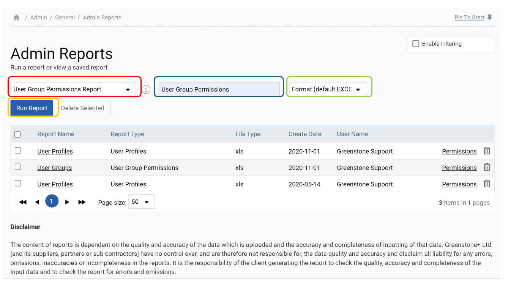
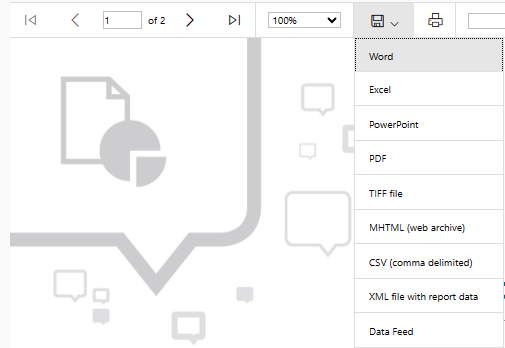

Admin reports provide general information about the system to assist the site administrator e.g. user permissions and roles. These are in the ‘Admin Settings > Admin Reports’ section, ensuring they are only available to those with admin user permissions.
To run a report first select the report from the selection list (see red outline), give the report a name (blue outline) and then select (green outline) in which format you would like the report saved. Once this is done click ‘Run Report’ (orange outline).

Once a report has been generated it can be exported to a number of formats e.g. Word and Excel to allow the user to use the data as required and it is stored on the system as a time-stamped Excel or PDF that can be accessed at any stage.

This table lists the Admin reports provided with a description of their contents.
| Report | Description |
| User Group Permissions Report | Lists the user groups with their view and access permissions |
| User Profiles Report | Lists each user, their email address, role and group permissions |